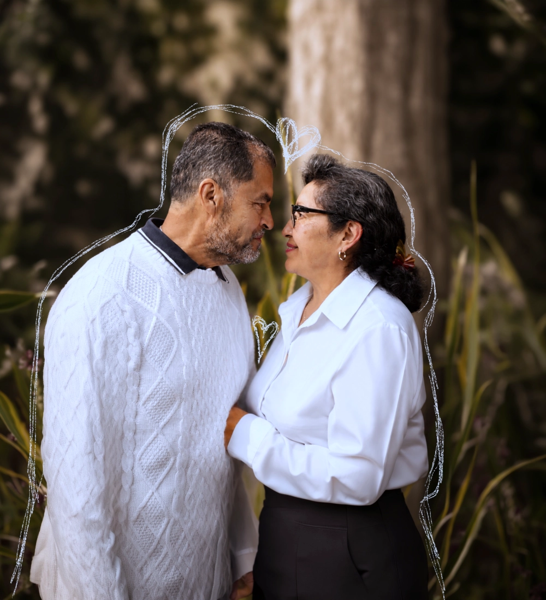

Su propósito es promover la prevención, la sensibilización y la detección oportuna de las demencias, fomentando una cultura de cuidado integral que reconozca los derechos, la dignidad y la participación activa de las personas mayores.
Este 2026, bajo el tema "Derribando los Muros de las Demencias", el programa se construye alrededor de cuatro muros que representan las principales barreras que impiden llegar a tiempo a un diagnóstico: la normalización de las señales, la pregunta de "¿para qué?", la dificultad para traducir la ciencia a la vida diaria, y el estigma y el miedo.

Hablar de demencias en México es hablar de uno de los grandes retos que acompaña al envejecimiento de nuestra población. Con frecuencia, el camino hacia un diagnóstico oportuno comienza mucho antes de llegar a una consulta especializada: las primeras señales pueden confundirse con la edad, persiste la idea de que "no hay nada que hacer", el lenguaje médico puede ser difícil de comprender, y el miedo o el estigma llevan a las familias a posponer la búsqueda de respuestas.
A estas barreras las llamamos muros invisibles: no dependen de la tecnología ni de los servicios médicos disponibles, sino de cómo reconocemos las señales, buscamos ayuda, comprendemos un diagnóstico y tomamos decisiones.
Este año, en Alzheimer Aprende y Actúa, identificamos cuatro de estos muros y trabajamos, con la voz de especialistas de distintas disciplinas, para comenzar a derribarlos.
Redefiniendo las señales de alerta
Es esperable que, con la edad, la velocidad de procesamiento disminuya o cueste más recordar un nombre, sin que esto afecte las funciones diarias. El problema surge cuando estas señales, cambios de personalidad, apatía, dificultades de juicio— se descartan como "cosas de la edad" sin ser, en realidad, alertas tempranas.
Este fenómeno tiene nombre: edadismo. La OMS lo define como el conjunto de estereotipos y prejuicios que presuponen que todas las personas de una edad determinada piensan, se comportan o tienen las mismas capacidades y señala que una de cada dos personas en el mundo tiene actitudes edadistas. EL edadismo puede llevar al propio personal de salud a asumir que ciertos padecimientos son "normales" para la edad, evitando intervenciones necesarias y las personas mayores pueden interiorizar esos estereotipos, asumiendo que sus síntomas "no merecen" atención.
Fuentes: Organización Mundial de la Salud (OMS), campaña mundial contra el edadismo; "Combatir el edadismo: conciencia y mejores prácticas en la atención de salud de personas mayores", Scielo México (2024).
El valor de la certeza
El nihilismo terapéutico consiste en negar intervenciones basándose en ideas como "ya no hay nada que hacer" y es más común de lo deseable incluso entre profesionales del ámbito sociosanitario, lo que agrava el problema porque a veces es el propio sistema de salud el que transmite ese mensaje de resignación.
El error central es equiparar la ausencia de cura con la ausencia de intervenciones útiles. Según la OMS, aunque no existe un tratamiento que cure la demencia, sí hay mucho por hacer: rehabilitación, psicoeducación, actividad física, estimulación cognitiva y apoyo a los cuidadores. Como dato importante, los cuidadores que no han dejado a un lado su propio proyecto de vida, que conservan esperanza hacia el futuro, reportan menos sobrecarga que quienes sienten que todo se detuvo.
Fuentes: Organización Mundial de la Salud (OMS), guía de intervenciones para demencia; Cerquera et al., "Percepción de calidad de vida en cuidadores de pacientes con demencia", Revista Científica de la Sociedad Española de Enfermería Neurológica (2017).
Traducir la ciencia a la vida diaria
La alfabetización en salud es la capacidad de obtener, entender y utilizar información para tomar decisiones informadas sobre la propia salud. El problema no es que las familias "no entiendan" es que el lenguaje médico rara vez está diseñado para ser entendido.
Un dato revelador: muchos adultos mayores salen de consulta diciendo "sí entendí", aunque por dentro sigan las dudas no por falta de interés, sino por vergüenza o miedo a "molestar" al profesional de salud. Comunicar va más allá de hablar: implica asegurarse de que la otra persona realmente comprendió lo que necesita hacer para cuidar su salud.
Fuentes: "Cuando el paciente asiente pero no entendió: comunicación en salud y alfabetización en adultos mayores", HC Gallery PR (2026); Organización Mundial de la Salud, definición de alfabetización en salud.
Visibilizar para poder actuar
Según el Informe Mundial sobre el Alzheimer 2024 de Alzheimer's Disease International (encuesta a más de 40,000 personas en 166 países, en colaboración con la London School of Economics), el 88% de las personas que viven con demencia reportan haber sufrido discriminación. Y un dato que golpea de forma distinta: 65% del personal de salud y de cuidado todavía cree, de forma equivocada, que la demencia es una parte normal del envejecimiento.
El estigma no opera de una sola manera: existe un estigma internalizado (la propia persona se aísla por vergüenza anticipada), un estigma público (creer que ya "no pueden aportar nada"), y uno que afecta a cuidadores y familiares directamente ("me da vergüenza hablar de esto con mis amigos"). El costo es doble — aísla a quien vive con demencia, y aísla también a quien cuida.
Fuentes: Alzheimer's Disease International, World Alzheimer Report 2024: Global changes in attitudes to dementia, en colaboración con la LSE.